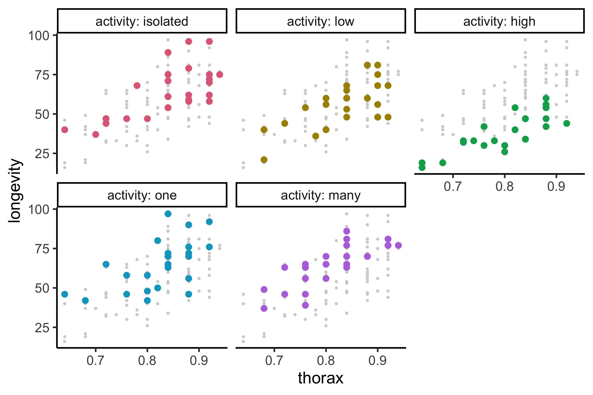

Code
library(tidyverse)
gfly <- faraway::fruitfly |>
mutate(activity = factor(activity, levels = c("isolated", "low", "high", "one", "many"))) |>
ggplot(aes(x = thorax, y = longevity, color = activity)) +
geom_point(data = ~select(., -activity), color = "lightgrey") +
geom_point(size = 4) +
facet_wrap(~activity, labeller = label_both) +
guides(color = "none") +
colorspace::scale_color_discrete_qualitative()
gfly
